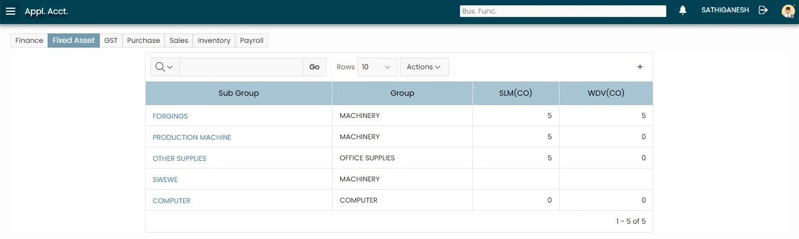
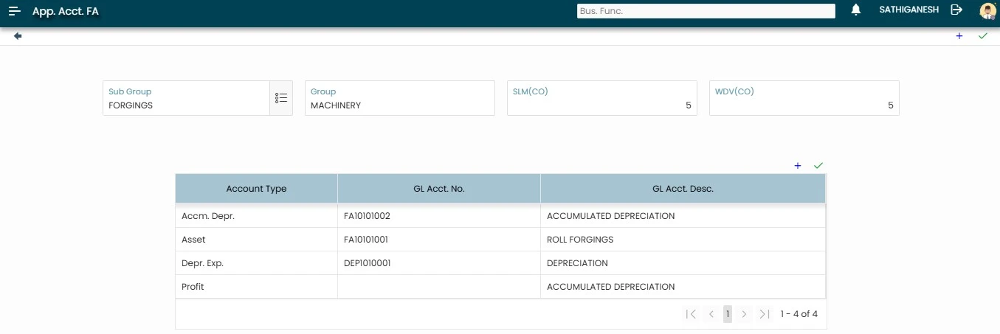

<div data-category="Financials" data-title="Application Journal Accounts – Appl. Acct. (FA)" data-updated="December 01, 2025" data-contributors="RoadmapIT" data-breadcrumb="Home,Financials,Application Journal Accounts – Appl. Acct. (FA)">
  <div class="page-content">
    <p>This screen is used to define Application journal Accounts for Fixed Assets (FA).</p>
    <h5>Navigation path:</h5>
    <p class="fs-6">Financial Management \ Setup \ CPC/GL account \ Appl. Accts (fixed asset).</p>
    
    <ul style="list-style-type: none; align-content: center">
      <li class="mouse-icon">
        Click
        <i class="bi bi-plus fs-4 mx-2 text-primary"></i>
        to add.
      </li>
    </ul>
    
    <ul style="list-style-type: none; align-content: center">
      <li class="mouse-icon">Enter/Select a Sub Group from LOV.</li>
      <li class="mouse-icon">Enter SLM (CO). Details.</li>
      <li class="mouse-icon">Enter WDV(CO) Details.</li>
      <li class="mouse-icon">
        Click to
        <i class="bi bi-check-lg fs-4 mx-2 text-success"></i>
        save the header.
      </li>
      <li class="mouse-icon">
        In the Line Item, Click
        <i class="bi bi-plus fs-4 mx-2 text-primary"></i>
        to add.
      </li>
      <li class="mouse-icon">Enter/Select an account Type from LOV.</li>
      <li class="mouse-icon">Enter/Select Account.</li>
      <li class="mouse-icon">
        Click
        <i class="bi bi-check-lg fs-4 mx-2 text-success"></i>
        to save.
      </li>
    </ul>
  </div>
</div>
